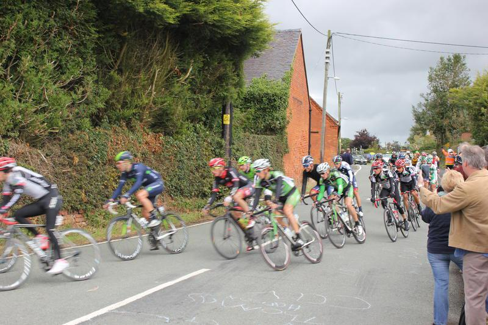

Tour Of Britain
Tour of Britain
{kind=link}
As a keen cyclist I was pleased to hear that stage four of the Tour of Britain was passing within a couple of miles of where I lived. I decided that the best place to get a good view was outside the local pub, where the race had to negotiate a "T" junction. The race was due to pass the pub about 12:00pm, so I left home shortly after eleven on the 20 minute ride, to give my self plenty of time to find a good spot.
Even though we were in the depths of the Shropshire countryside there was a good turn out of spectators, many of whom arrived by cycle. I hadn't realized how much organization was involved in getting the Peleton safely along the route. Police motorycle outriders started arriving about 20 mins. before the riders. In all there must have been around 20 motorbikes ahead of the peleton.
Finally the lead breakaway group, which was about two and a half minutes ahead of the peleton arrived. I hadn't appreciated how fast the riders would be cycling. Even going round the T junction they were going so quickly that most of my photos were blurred. After the peleton zoomed past, I resumed my ride, getting in a very modest 20 mile round trip back home.